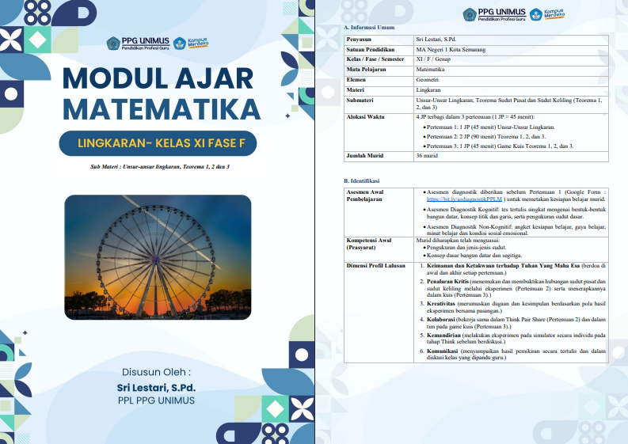
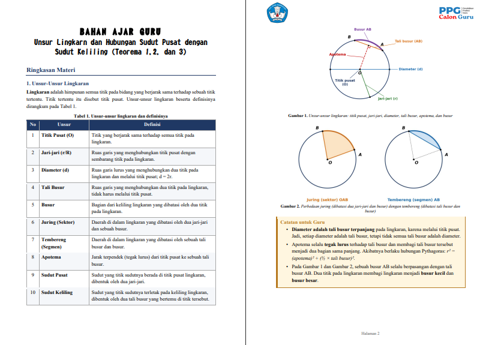
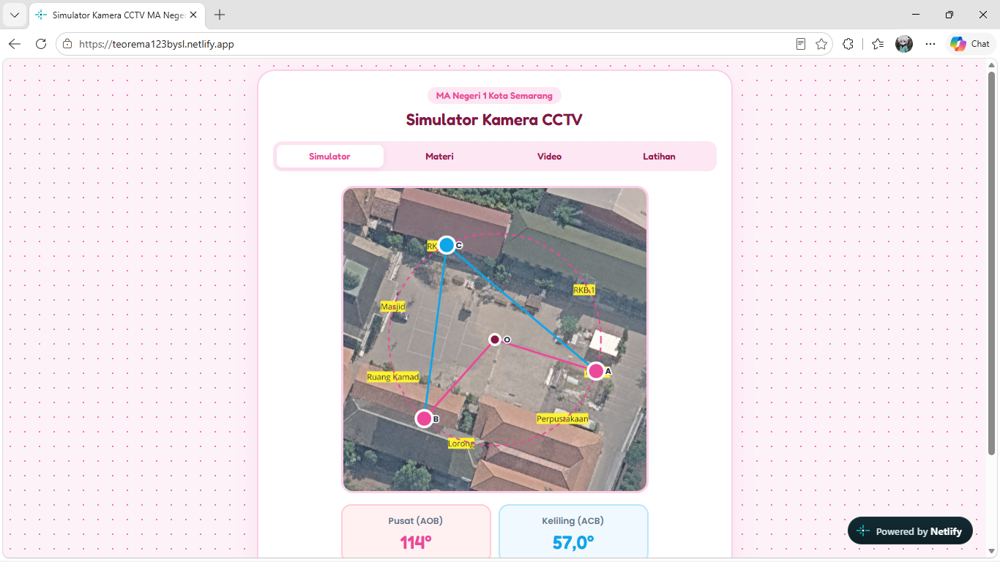
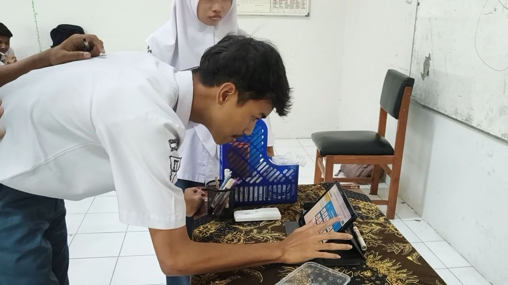
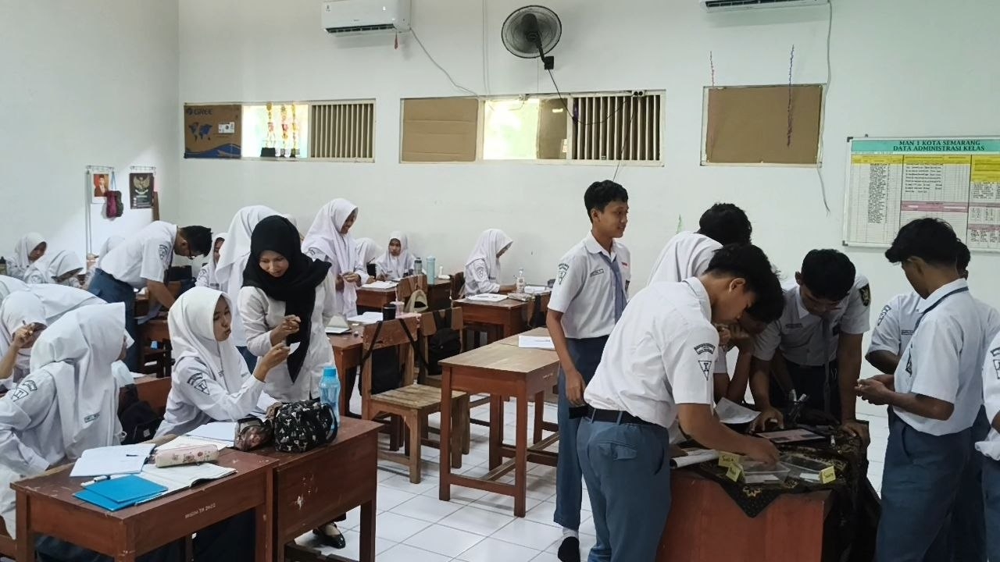
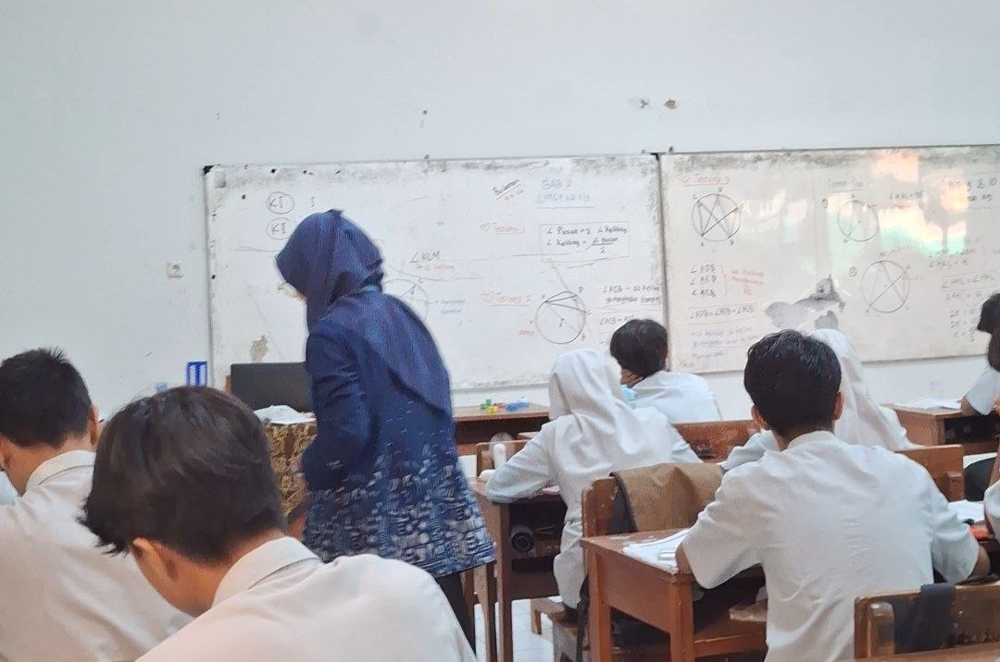
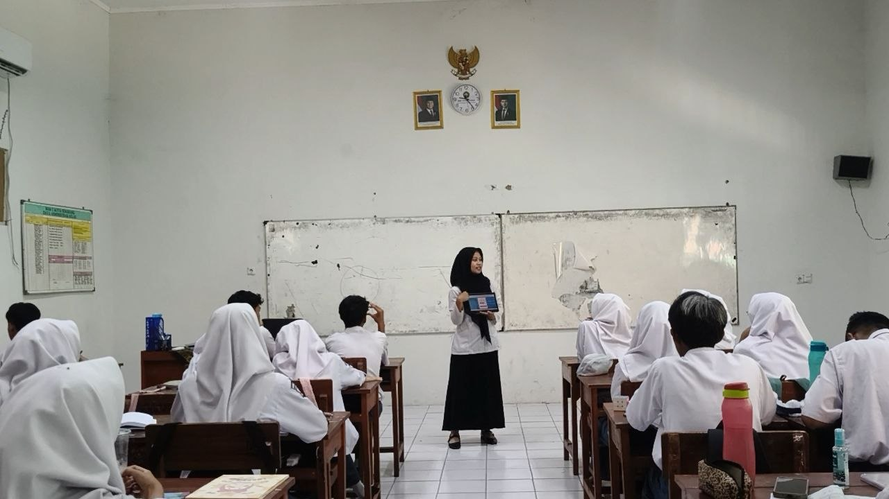

Siklus 1
Penerapan Awal Pembelajaran Matematika
Siklus 1 berfokus pada pemahaman konsep dasar lingkaran melalui pembelajaran bertahap dan eksploratif. Pembelajaran dilaksanakan melalui penguatan materi prasyarat, eksplorasi hubungan sudut pusat dan sudut keliling menggunakan media digital, serta aktivitas Think-Pair-Share. Pada akhir siklus, pemahaman murid diperkuat melalui Lord of The Rings, yaitu kuis bertingkat yang mendorong murid untuk berani mencoba, mempertahankan usaha, dan mengerjakan soal secara mandiri.

Perencanaan Pembelajaran
Buka DokumenLihat Analisis ▾
Perencanaan disusun berdasarkan hasil observasi awal. Strategi berfokus pada pengenalan konsep dasar matematika. Tantangan utamanya adalah menyesuaikan alokasi waktu dengan kedalaman materi agar siswa tidak merasa terbebani. Target diselaraskan dengan kebutuhan kognitif siswa.

Bahan Ajar Guru
Buka Bahan AjarLihat Analisis ▾
Materi dirancang kontekstual (Culturally Responsive Teaching). Dari hasil implementasi, diagram visual dan contoh konkret yang dekat dengan lingkungan siswa sangat membantu pemahaman mereka dibandingkan teks murni.

Media Pembelajaran
Lihat MediaLihat Analisis ▾
Media visual interaktif terbukti meningkatkan atensi di awal sesi. Meskipun efektif memecah keabstrakan, siswa tetap butuh instrumen fisik untuk fokus pada tahap latihan menghitung mandiri.
Video Pembelajaran
Lihat Analisis ▾
Rekaman kelas menunjukkan interaksi dua arah mulai terbangun. Respons positif terlihat, meski beberapa siswa di belakang masih pasif. Mobilitas guru di dalam kelas perlu ditingkatkan secara merata ke depannya.
Dokumentasi Siklus 1




Refleksi & Rencana Tindak Lanjut
Dokumen Refleksi
Berisi catatan komprehensif mengenai hasil evaluasi Siklus 1, hambatan yang dialami selama KBM di kelas XI, serta respons peserta didik terhadap materi awal geometri.
Buka Refleksi (Google Drive)
Rencana Tindak Lanjut
Berdasarkan refleksi Siklus 1, langkah perbaikan yang akan diimplementasikan pada Siklus 2 meliputi:
- Mengintegrasikan elemen gamifikasi untuk meningkatkan motivasi dan partisipasi aktif siswa.
- Mendesain Lembar Kerja Mahasiswa (LKM) yang lebih berdiferensiasi untuk mengakomodasi berbagai tingkat pemahaman kognitif.
- Meningkatkan mobilitas guru saat pendampingan kelompok agar seluruh siswa mendapatkan perhatian yang merata.